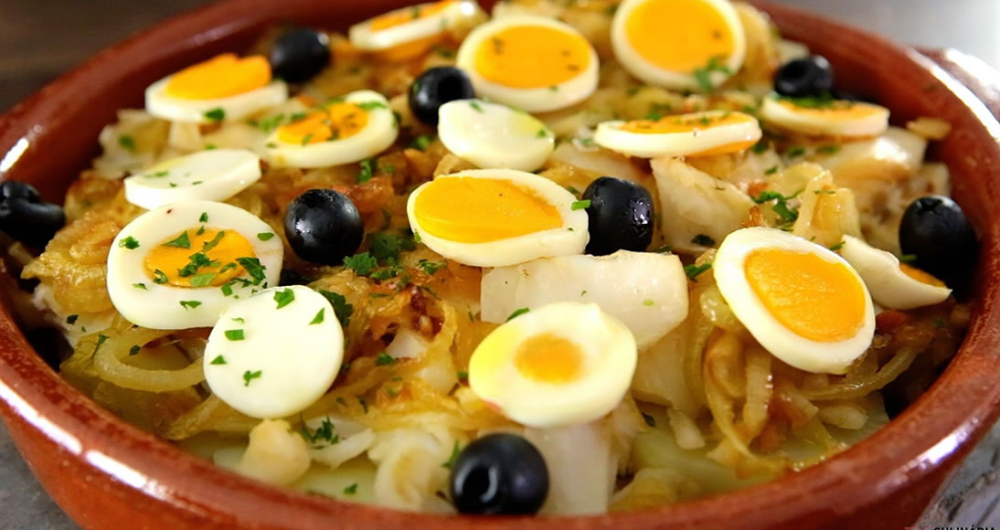

Bacalhau à gomes de sá

Descrição
O bacalhau é um peixe magro com cerca de 70 Kcal por cada 100 gramas. É rico em magnésio e potássio e deve ser salgado manter a sua conservação. O bacalhau é demolhado e a seguir cozinha-se no forno, na frigideira, na brasa ou simplesmente cozido em água.
Em Portugal, existem 1001 maneiras de cozinhar bacalhau, umas mais tradicionais outras mais criativas. Os portugueses adoram e consomem o bacalhau em qualquer ponto do país.
Ingredientes
- 400 gr bacalhau já demolhado
- 500 gr batatas fritas palha em pacote
- 2 un cebolas grandes
- 3 dentes alho
- 3 colheres de sopa azeite
- 6 un ovos
- q.b. sal
- q.b. pimenta branca
- q.b. salsa picada
Passos
- Se optou por utilizar bacalhau congelado, só precisa de o deixar descongelar e fica pronto a utilizar. Caso, prefira utilizar bacalhau salgado, deverá deixar a demolhar no minimo durante 20 a 24 horas em bastante água.
- Escalde o bacalhau durante cerca de 10 minutos numa panela com água a ferver. Retire da água e deixe arrefecer um pouco antes de lhe retirar as peles e as espinhas. Agora já pode desfiá-lo em lascas.
- Refogue as cebolas e os alhos no azeite, junte o bacalhau e deixe-o absorver um pouco o azeite durante 2 a 3 minutos.
- Adicione depois a batata palha envolvendo bem.
- Quando estiver quente, junte os ovos previamente batidos e temperados com sal e pimenta. Atenção porque se utilizar as batatas de pacote nem sequer necessita de adicionar sal.
- Mantenha o lume baixo e envolva bem, mexendo sempre com uma colher de pau até os ovos ficarem com uma consistência semelhante á dos ovos mexidos.